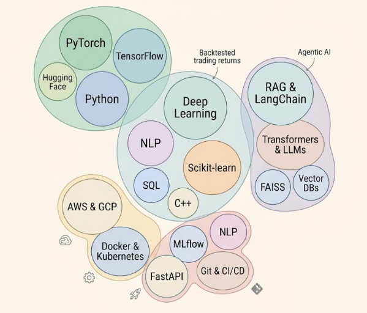

Funny ML Guy, Co-founding of Human Slop
Started as a Data Scientist wrangling messy datasets and building predictive models, But soon I realized that my true passion lies beyond just data and more towards AI systems and Deep Learning. And worked on a wide range of projects for hackathons, competitions, personal research, and Internship. Got fed up Building in AI all the time hence Co-founded Human Slop (Anti-AI Social Platform)
Some of the ideas I tried.
Privacy-first social platform that blocks 100% of AI-generated content using hardware-bound biometric authentication and real-time typing forensics. Dual-database architecture analyzes keystroke patterns (WPM, burst timing, pauses) to compute a "Human Score" proving organic authorship. Currently deployed on web and mobile.
Production-ready PyTorch library for Deep Mutual Learning enabling collaborative neural network training. Implements state-of-the-art DML techniques where multiple networks train together and learn from each other's predictions, achieving 2-5% accuracy improvement over independent training. Includes 34 modular components with AMP, DDP, ONNX export, and comprehensive test coverage. 2-5% higher accuracy compared to independent training.
Multi-agent AI system for autonomous market analysis and portfolio management. Led 8-member engineering team to design 7-layer architecture combining real-time data streaming (Pathway), reinforcement learning, and explainable LLM reasoning. Generated ~20% returns with 5–8% max drawdown over backtested and paper-traded horizon with complete transparency and auditability.
Production-grade multi-agent Retrieval-Augmented Generation system for Ayurvedic medical knowledge. Implements CRAG framework with hybrid BM25 + vector retrieval, reducing hallucinations to <10% (RAGAS score) and improving retrieval accuracy by 35%. Deployed as FastAPI service with interactive Streamlit interface.
End-to-end ML pipeline with ensemble models (XGBoost + Linear Regression) achieving R² of 0.989 for academic risk prediction. Integrated SHAP explainability for model interpretability, MLflow for experiment tracking, and deployed interactive Streamlit dashboard with versioned models and reproducible training pipeline.
Memory-efficient Transformer attention mechanism with block-based KV caching, reducing memory usage by 60–80%. Implemented copy-on-write (COW) for beam search, recompute/swap strategies, and parallel sampling to boost inference throughput by 2.3x for production LLM deployment.
Research project combining PPLM steering with lightweight RLHF proxy (reward model + supervised fine-tuning) for generating context-aware poetry. Built modular experiment framework with reproducible pipelines for training, evaluation, and batch sweeps tracking reward, perplexity, and distinctness metrics.
Full Bomberman game implementation with AI-driven bot agents capable of strategic decision-making. Implemented A* pathfinding, state-based behavior (search, chase, evade), bomb safety simulation, and intelligent evasion scoring to create adaptive opponents with real-time decision-making.
Random
Independent Research
Oct 2025 – Dec 2025
Led 8-member engineering team to architect production-grade multi-agent financial AI system combining real-time streaming, reinforcement learning, and explainable LLM reasoning. Designed complete 7-layer architecture with temporal data fabric, hybrid ML/RL forecasting pipeline, agentic debate framework, and real-time risk engine. Delivered end-to-end platform integrating live market/news/social data with causal knowledge graph, achieving ~20% returns with 5–8% max drawdown over backtested and paper-traded horizon.
Kartavya Technology
Jun 2024 – Aug 2024
Developed multi-agent automation systems and secure REST APIs integrated with AWS and GCP, reducing manual effort by 40% and increasing throughput by 30%. Built cloud infrastructure maintaining 99.9% uptime through CI/CD pipelines. Optimized performance and reduced infrastructure costs by 25% through proactive monitoring and risk assessment.
Indian Institute of Technology Bhilai
Aug 2023 – May 2027 (Expected)
Coordinator, DSAI Club — organized hackathon and workshops promoting AI-driven innovation across 200+ students. Led hands-on ML sessions for applied ML and research-oriented projects. Relevant Coursework: Data Structures & Algorithms, Machine Learning, Natural Language Processing, Deep Learning, Database Management Systems, Statistics, Operating Systems
Exploration I did in Tech Before my brain got eaten by Zombies

AI wrote my Code not My Philosophy
I had a childhood dream of building intelligent machines that only I have access to and not for industry but just for fun. But in deep down fast paced competitive world,I somehow forgot it, but now I am getting back on track building cool and sexy techs. I believe the best AI is the AI that ships. And best work is when AI is used for assistance and not for replacement. Stucked in College Pre-Final Year while Co-building Human Slop and writing technical deep-dives.
Based in Kanpur, India • IIT Bhilai
Some Highlights to Blabber about of me
Ranked 36/1,711 teams (top 2%) building stable commodity return forecasting models.
Ranked 34/386 participants forecasting Ethereum volatility with high-frequency data as in 2 weeks of intense competition.
Co-founding Human Slop, building anti-AI social platform with typing forensics.
Competed among thousands of participants nationwide building a robust VLM-based solution.
Led team to improve baseline ML results by 23% under tight computational constraints.
Publishing my random deep-dives on Medium covering tech fun rides.
Always wrangling with new ideas executing only 5% of them and failing at 90%, Still saying yes to anyone's Idea.